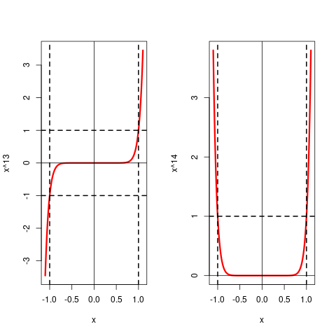
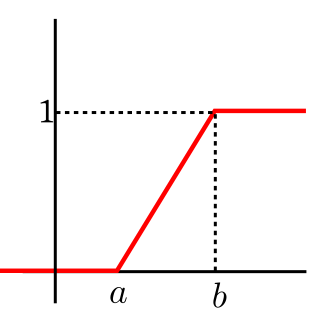
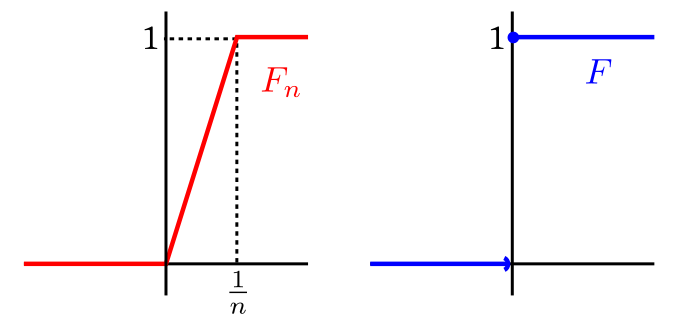

| Last updated on: Tue Aug 25 19:21:57 IST 2026 |
"$X_n\rightarrow X$"to mean
"$\forall \omega\in \Omega~~X_n(\omega)\rightarrow X(\omega).$"However, we also know that random variables are used only in probability computation, and so if we take some $A\subseteq \Omega$ such that $P(A)=0,$ then the behaviour of a random variable over $A$ "does not really matter". Hence instead of wanting to have $X_n(\omega)\rightarrow X(\omega)$ everywhere (i.e., $\forall \omega\in \Omega$) it is enough to have it almost everywhere (i.e., $\forall \omega\in$ a set of probability 1).
EXAMPLE 1: Let our probability space be $Unif[0,1]$ with $\Omega = {\mathbb R}.$ Let $X_n(\omega) =\omega^n$, and let $X(\omega)\equiv 0.$
Then the event $\{X_n\rightarrow X\}$ is the set of all $\omega$ such that $X_n(\omega)\rightarrow X(w)$, which is $(-1,1).$[Because...]Then $X_n\rightarrowA X,$ since under $Unif(0,1),$ the set $(-1,1)$ has probability 1 (it is a superset of $[0,1)$). However, if we replace $Unif(0,1)$ with $Unif(0,2),$ then the convergence breaks down since now $(-1,1)$ has probability only $\frac 12<1.$ ■Let's understand this with some examples. We shall consider different values of $\omega\in{\mathbb R}$ and see when $X_n(\omega) \rightarrow X(\omega)$ holds, i.e., when $\omega^n\rightarrow 0$ holds.So we see that $X_n(\omega) \rightarrow X(\omega)$ if and only if $\omega\in(-1,1).$
- If $\omega=\frac 12,$ then $\omega^n = \left(\frac 12\right)^n\rightarrow 0.$ More generally, for all $\omega\in[0,1)$ we have $\omega^n \rightarrow 0.$
- If $\omega = -\frac 12,$ then also $\omega^n = \left(-\frac 12\right)^n\rightarrow 0,$ and in general, for all $\omega\in(-1,0)$ we have $\omega^n \rightarrow 0.$
- If $\omega = 1,$ then $\omega^n=1^n = 1 \rightarrow 1,$ and hence $\omega^n \not\rightarrow 0.$
- If $\omega=2,$ then $\omega^n = 2^n\rightarrow \infty,$ and hence again $\omega^n \not\rightarrow 0.$ More generally, for all $\omega > 1,$ we have $\omega^n \not\rightarrow 0.$
- If $\omega = -2,$ then $\omega^n$ keeps on oscillating, and does not converge. So here also $\omega^n \not\rightarrow 0.$ This behaviour is shared by all $\omega\leq -1.$

Notice how the graphs of $x^{13}$ and $x^{14}$ over $(-1,1)$ approach the $x$-axis.
Proof: Let $A=\{\omega~:~X_n(\omega)\rightarrow X(\omega)\}$ and $B=\{\omega~:~Y_n(\omega)\rightarrow Y(\omega)\}.$
Then $P(A)=1$ and $P(B)=1$ and hence $P(A\cap B)=1.$[Because...]Now apply the corresponding results from real analysis for each $\omega\in A$ (for 1) and for $\omega\in A\cap B$ (for 2 and 3). For $4,$ let $C=\{\omega~:~Y(\omega)\neq 0\}.$ Then $P(A\cap B\cap C)=1.$ Now apply the corresponding result from real analysis for each $\omega\in C.$ [QED] Possibly the most famous use of almost sure convergence in exploring statistical regularity is the following theorem.We know that $P(A\cup B)\geq P(A) = 1.$ So $P(A\cup B)= 1.$ But $P(A\cup B) = P(A)+P(B)-P(A\cap B).$ Hence $P(A\cap B) = P(A)+P(B)-P(A\cup B) = 1+1-1 = 1.$
Proof:Skipped.[QED]
This is essentially what we saw when we did the coin tossing example of statistical regularity.EXERCISE 1: Let $(X_n)$ be iid $Poi(\lambda).$ Let $Y_n = \frac 1n\sum_1^n X_k^2.$ Show that $(Y_n)$ converges a.s. Find the limit.
EXERCISE 2: Let $(X_n)$ be iid $Poi(\lambda).$ Let $Y_n = \frac 1n\sum_1^n (X_k-1)^2.$ Show that $(Y_n)$ converges a.s. Find the limit.
EXERCISE 3: Let $(X_n)$ be iid with finite variance $\sigma^2.$ Show that $$\frac{1}{n-1}\sum_1^n (X_k-\bar X_n)^2\rightarrowA \sigma^2.$$
Hint:
Be careful: $(X_1-\bar X_n)^2$, $(X_2-\bar X_n)^2,...$ etc are not independent.
EXERCISE 4: Let $(X_n)$ be iid $Unif(1,2).$ Let $G_n$ be the geometric mean of the first $n$ of them, i.e., $$G_n = \left(\prod_1^n X_k\right)^{\frac 1n}.$$ Show that $G_n$ converges a.s. Find the limit.
EXERCISE 5: Let $N$ be an ${\mathbb N}$-valued random variable. Let $(X_n)$ be a sequence of random variables defined on the same probability space as follows. $$X_n(\omega) =\left\{\begin{array}{ll}1&\text{if }n\leq N(\omega)\\ 0&\text{otherwise.}\end{array}\right.. $$ Show that $X_n\rightarrowA 0.$
EXERCISE 6: Let $(A_n)$ be a sequence of events in some probability space. Show that $I_{A_n}\rightarrowA 0$ if and only if $P(A_n\io)=0.$
EXERCISE 7: Let $(A_n)$ be a sequence of events in some probability space such that $P(A_n)=\frac{1}{n^2}.$ Show that $I_{A_n}\rightarrowA 0.$ Here $I_{A_n}$ is the indicator variable for $A_n.$
Hint:
Use the first Borel-Cantelli lemma.
EXERCISE 8: Let $(A_n)$ be a sequence of independent events in some probability space such that $P(A_n)=\frac 1n.$ Check if $I_{A_n}\rightarrowA 0.$
Hint:
Use the second Borel-Cantelli lemma.
EXERCISE 9: Let $(X_n)$ be iid $Bernoulli(p)$ for some $p\in (0,1).$ Let $Y_n = \max_{1\leq k\leq n} X_k.$ Show that $Y_n\rightarrowA 1$.
EXERCISE 10: Let $(X_n)$ be iid $Unif[0,1].$ Let $Y_n = \max_{1\leq k\leq n} X_k.$ Show that $Y_n\rightarrowA 1$.
EXERCISE 11: Let $(X_n)$ be an independent sequence of random variables with $$P(X_n=n) = \frac{1}{n^2}\mbox{ and } P(X_n=0) = 1-\frac{1}{n^2}.$$ Show that $X_n\rightarrowA 0.$
Proof: To show $$\forall \epsilon > 0~~ P(|\overline X_n-\mu|> \epsilon) \rightarrow 0\mbox{ as } n\rightarrow \infty.$$ Take any $\epsilon > 0.$
Applying Chebyshev inequality to the random variable $\bar X_n$ we have $$P(|\overline X_n-\mu|> \epsilon) \leq \frac{V(\overline X_n)}{\epsilon^2}.$$ Now $$V(\overline X_n) = V\left(\frac 1n\sum_1^n X_i\right) = \frac{1}{n^2} \sum_1^n V(X_i),$$ since $X_i$'s are independent. Also each $V(X_i) = \sigma^2.$ Hence $$V(\overline X_n) = V\left(\frac 1n\sum_1^n X_i\right) = \frac{\sigma^2}{n}.$$ Hence we have $$P(|\overline X_n-\mu|> \epsilon) \leq \frac{\sigma^2}{n\epsilon^2}\rightarrow 0,$$ as $n\rightarrow \infty.$ [QED]EXERCISE 12: If $X_n\rightarrowP X,$ show that $-X_n\rightarrowP -X.$
EXERCISE 13: Let $X_n\rightarrowP X$ (random sequence) and $a_n\rightarrow a$ (fixed sequence). Show that $X_n+a_n\rightarrowP X+a.$
EXERCISE 14: Let $X_n\rightarrowP X$ (random sequence) and $a_n\rightarrow a$ (fixed sequence). Show that $a_nX_n\rightarrowP aX.$
EXERCISE 15: If $X_n\rightarrowP X,$ show that $|X_n|\rightarrowP |X|.$
EXERCISE 16: If $X_n\rightarrowP X,$ and $f:{\mathbb R}\rightarrow{\mathbb R}$ is a continuous function, then show that $f(X_n)\rightarrowP f(X).$
EXERCISE 17: Suppose $P(X_n=n)=\frac 1n$ and $P(X_n=0)=1-\frac 1n.$ Then is it true that $X_n\rightarrowP 0$?
EXERCISE 18: If $E(X_n)=0$ and $V(X_n) = \left(\frac 1n\right)^{1/3},$ then show that $X_n\rightarrowP 0.$
EXAMPLE 2: Let $(X_n), X $ be random variables on the same probability space. Consider the following two statements:
Proof:Shall not prove in this course.[QED]
Proof:The first property follows directly.
The second property follows from the norm properties of $\|\cdot\|_p.$.[QED] However, even if $X_n\rightarrowL p X$ and $Y_n\rightarrowL p Y$ and $X_nY_n, XY$ have finite $p$-th moments, we may have $X_nY_n\not\rightarrowL p XY.$ The first exercise below provides a counterexample.EXERCISE 20: Let $U\sim Unif(0,1).$ Define $$X_n = Y_n = \left\{\begin{array}{ll}n^{1/(2p)}&\text{if }U\in\left(0,\frac 1n\right)\\ 0&\text{otherwise.}\end{array}\right..$$ Also, let $X=Y\equiv 0.$
Show that $E|X_nY_n|^p=1.$ Hence show that this provides a counterexample to the statement above.EXERCISE 21: Let $P(X_n=n) = 1-P(X_n=0)=\frac{1}{n^2}.$ Determine for which values of $p\geq 1$ we have $X_n\rightarrowL p 0.$
EXERCISE 22: Show that if $(X_n)$ is an iid sequence with mean $\mu$ and variance $\sigma^2<\infty,$ then $\frac 1n\sum_1^n X_k\rightarrowL 2 \mu$.
EXERCISE 23: Construct $(X_n)$ such that $X_n\rightarrowL 1 X$ but $X_n\not\rightarrowL 2 X$.
 |
|---|
| Distribution function of $Unif(a,b)$ |
EXAMPLE 3: Suppose that $X_n\sim Unif\left(0,\frac 1n\right).$ Intuitively, what distribution does $(X_n)$ approach?
SOLUTION: Intuitively the limiting distribution should be degenerate at $0$, i.e., $X_n\rightarrowD X,$ where $X\equiv 0.$ Now let us consider the distribution functions of $X_n$ and $X$: |
|---|
EXAMPLE 4: Consider a $Unif(0,1)$ probability space, and let $X_n(\omega) = \omega.$ Also let $X(\omega) = \omega.$ Then obviously $X_n\rightarrowD X$, because they are all actually the same random variable! But is the following statement also true: $X_n\rightarrowD 1-X$?
SOLUTION: While it might surprise you, the answer is "Yes!", because $X$ and $1-X$ both have the same distribution, viz., $Unif(0,1).$ When we say $X_n\rightarrowD X$, we actually mean"distribution of $X_n$ $\rightarrow$ distribution of $X$ ".Since distribution of $X$ is the same as as the distribution of $1-X,$ convergence in distribution does not distinguish between $X$ and $1-X.$ Indeed, a more reasonable notation is $X_n\rightarrow Unif(0,1).$ Here we are writing the distribution itself after the arrow, and hence there is no need to use the $\rightarrowD$ notation. ■
Proof:Direct.[QED]
However, we do not have any result like "If $X_n\rightarrowD X$ and $Y_n\rightarrowD Y$, then $X_n\pm Y_n\rightarrowD X\pm Y.$" The following example explains why.EXAMPLE 5: Show that $X_n\rightarrowD X$ and $Y_n\rightarrowD Y$ do not imply $X_n+ Y_n\rightarrowD X+ Y.$
SOLUTION: We consider a $Unif(0,1)$ probability space. Define $X_n(\omega) = \omega$ and $Y_n(\omega) = \omega.$ Also let $X(\omega) = \omega$ and $Y(\omega) = 1-\omega.$ Then $X_n\rightarrowD X$ and $Y_n\rightarrowD Y.$ But $X+Y\equiv 0,$ while for each $n$ we have $X_n+Y_n \sim Unif(0,2).$ So $X_n+ Y_n\not\rightarrowD X+ Y,$ as required. ■EXERCISE 24: Let $(a_n)$ be a fixed sequence with $a_n\rightarrow a.$ Let $X_n\equiv a_n$ and $X\equiv a.$ Then is it true that $X_n\rightarrowD X$?
EXERCISE 25: Let $X_n\sim Bern\left(\frac 1n\right).$ Then show that $X_n$ converge in distribution. Find the limit.
EXERCISE 26: Let $(X_n)$ be a sequence of random variable with distribution function $F_n,$ where
$$F_n(x) = \left\{\begin{array}{ll}0&\text{if }x < 0\\ x^n&\text{if }x\in[0,1)\\ 1&\text{otherwise.}\end{array}\right.. $$ Show that $X_n\rightarrowD X$ for some $X.$ What is the distribution of $X$?EXERCISE 28: If $X_n\sim Unif\left(\frac{\sqrt n-\sqrt 2}{2\sqrt n},\frac{\sqrt n+\sqrt 2}{2\sqrt n}\right),$ then does $(X_n)$ converge in distribution? If so, find the limiting distribution.
EXERCISE 29: If $X_n\sim Unif\left(n-\frac 1n,n+\frac 1n\right),$ then does $(X_n)$ converge in distribution? If so, find the limiting distribution.
EXERCISE 30: Let $U_1,...,U_n$ be iid $Unif(0,1)$ random variables. Let $X_n = \min_i U_i.$ Show that $X_n\rightarrowD 0.$
EXERCISE 31: $(X_n), X$ are discrete random variables taking values in $\{1,...,10\}.$ If pmf of $X_n$ converges pointwise to pmf of $X,$ then show that $X_n\rightarrowD X.$
Proof:Skipped.[QED]
This theorem is a manifestation of statistical regularity. Whatever may the true distribution of the $X_i$'s be, if you average a large number of $X_i$'s you get close approximation to the normal distribution. This allows statistician to deal with averages of a large number of IID observations without knowing the true underlying distribution. Let's look at a typical example.EXAMPLE 6: If 40% of the population of a city supports a poll candidate, then what is the approximate probability that a random sample of 500 persons from the city will have at least 250 supporters?
SOLUTION: Here we think of the sampling procedure as 500 trials of the same random experiment: Pick a person at random from the population of the city. We shall assume that the trials are iid. Now here we are introducing an approximation: the first membr of the sample was drawn from the entire population, but since we generally sample without replacement in such a scenario, the second member of the sample was drawn from a population of size one less than in the case of the first member. So the random experiment has actually changed, and they are not independent also. But since the population is large (much larger than 500), so we are ignoring both the non-identical and dependent nature and assuming iid. We also have a random variable: $$X(\omega) = \left\{\begin{array}{ll}1 &\text{if }\omega\mbox{ supports the candiate}\\ 0&\text{otherwise.}\end{array}\right.$$ Here $\omega$ is the person sampled. Each trial gives rise to one copy of this random variable, so we have $X_1,...,X_{500}$ iid $Bernoulli(0.4).$ This $0.4$ came from the 40% given in the problem. By CLT we have $$\frac{\sqrt n (\bar X_n-\mu)}{\sigma}\rightarrow N(0,1)$$ as $n\rightarrow \infty,$ where $\mu = E(X_i)$ and $\sigma^2 = V(X_i)< \infty.$ We shall write this as $$\bar X_n \stackrel{\bullet}{\sim} N\left(\mu,\frac{\sigma^2}{n}\right)$$ for large $n.$ Here $\stackrel\bullet\sim$ means "approximately distributed as". In our case, $\mu = 0.40$, $\sigma^2 = 0.4(1-0.4) = 0.24$ and $n=500.$ So $$\bar X_{500} \stackrel{\bullet}{\sim} N\left(0.40,\frac{0.24}{500}\right),$$ or $$\sum_1^n X_i \stackrel{\bullet}{\sim} N(0.40\times 500,0.24\times 500)\equiv N(200, 120).$$ Nowe we can find the required probability as $$P(\sum_1^{500} X_i \geq 250) \approx 1-\Phi\left(\frac{250-200}{\sqrt{120}}\right).$$ This probability may be obtained by looking up standard $N(0,1)$ tables or using R as1-pnorm((250-200)/sqrt(120))■ In this problem we knew the distribution of the $X_i$'s, but we never really made any use of it, except to compute $E(X_i)$ and $V(X_i).$
EXERCISE 32: [rossdistrib10.png]
EXERCISE 33: [rossdistrib8.png]
EXERCISE 34: [rossdistrib5.png]
EXERCISE 35: Let $X_n\rightarrowD N(0,1)$ and $Y_n\rightarrowP 5.$ Then what is the limiting distribution of $X_n+Y_n?$
EXERCISE 36: Let $X_n\rightarrowD X$ and $Y_n\rightarrowP Y.$ Show that $X_n+Y_n\rightarrowD X+Y$ need not hold.
EXERCISE 37: Let $X_n\rightarrowD N(0,1)$, $Y_n\rightarrowP 5$ and $Z_n\rightarrowP 4$ with $z_n > 0.$ Then what is the limiting distribution of $\frac{X_n+Y_n}{\sqrt {Z_n}}?$
EXERCISE 38: Suppose that $\sqrt n(X_n-\theta)\rightarrowD Z$ and $Y_n\rightarrowP a.$ Show that $\sqrt n(X_nY_n-a\theta)\rightarrowD aZ.$
EXERCISE 39: Let $X_n$ be asymptotically $N\left(\mu,\frac{\sigma^2}{n}\right).$ What is the asymptotic distribution of $\frac{X_n}{1+X_n}?$
EXERCISE 40: Let $T_n$ be a consistent estimator of $\theta,$ and let $S_n$ be a consistent estimator of $\sigma^2.$ Show that the Studentized statistic $\frac{T_n-\theta}{\sqrt{S_n}}$ has the the same asymptotic distribution as $\frac{T_n-\theta}{\sigma},$ whenever an asymptotic distribution exists.
EXERCISE 41: Let $X_n\rightarrowD X$ and $X_n+Y_n\rightarrowD X+1.$ Does this imply that $Y_n\rightarrowP 1?$
Proof: To show $\forall \epsilon>0~~P(|X_n-X|\geq \epsilon) \rightarrow 0$ as $n\rightarrow \infty.$
Take any $\epsilon>0.$ Let $A_n = \{|X_n-X|\geq \epsilon\}$. Since $X_n\rightarrowA X,$ hence $P(A_n\io) = 0.$ Hence $P(A_n)\rightarrow 0.$ [QED]Proof: Take any $\epsilon>0.$ Then, by Markov inequality applied to $|X_n-X|$ (which is nonnegative thanks to the modulus), we have $$P(|X_n-X|>\epsilon)\leq \frac{E(|X_n-X|)}{\epsilon}\rightarrow 0.$$ [QED]
Though convergence in distribution does not imply convergence in probability in general, but there is one important special ase where it does! This is given in the theorem below.Proof: Since $X_n\rightarrowD C,$ hence $\forall x < c~~P(X_n\leq x)\rightarrow 0$ and $\forall x \geq c~~P(X_n\leq x)\rightarrow 1$
Shall show $X_n\rightarrowP c,$ i.e., $\forall \epsilon>0~~P(|X_n-c| > \epsilon)\rightarrow 0.$ Take any $\epsilon>0.$ Then $$\begin{eqnarray*} P(|X_n-c| > \epsilon) & = & P(X_n < c-\epsilon \mbox{ or } X_n > c+ \epsilon)\\ & = & P(X_n < c-\epsilon)+P(X_n > c+ \epsilon)\\ & = & P(X_n < c-\epsilon)+1-P(X_n \leq c+ \epsilon)\\ & \leq & P(X_n < c-\epsilon)+1-P(X_n \leq c+ \epsilon)\\ & \rightarrow & 0 + 1-1 = 0. \end{eqnarray*}$$ Hence, by sandwich law of limit, $P(|X_n-c| > \epsilon\rightarrow 0,$ as required.[QED]EXAMPLE 7: We work with $Unif(0,1)$ probability space. Let $X_n(\omega) = \left\{\begin{array}{ll}n&\text{if }\omega\in\left(0,\frac 1n\right)\\ 0&\text{otherwise.}\end{array}\right.$.
Let $X\equiv 0.$ Then clearly $\forall\omega\in (0,1)~~X_n(\omega)\rightarrow X(\omega).$ Hence $X_n \rightarrowA X.$ But $\forall n\in{\mathbb N}~~E(X_n) = n\times\frac 1n = 1\not\rightarrow 0 = E(X).$ ■ Other counterexamples are in the problem set below.EXERCISE 42: Let $f_1,f_2,f_3,...:[0,1]\rightarrow{\mathbb R}$ be defined as indicator functions of
$[0,1],$ $\left[0, \frac 12 \right], \left[ \frac 12, 1 \right], $ $\left[0,\frac 13 \right], \left[ \frac 13, \frac 23 \right], \left[ \frac 13, 1 \right], $ etc. Let $U\sim Unif[0,1].$ Let $X_n = f_n(U).$ Let $X\equiv 0.$ Show that $X_n\rightarrowL 1 X$ but $X_n\not\rightarrowA X.$EXERCISE 43: Consider $X_n, X$ as in the last exercise. Show that $X_n\rightarrowP X.$
EXERCISE 44: Among the examples discussed so far, there is one counterexample that shows that convergence is probability does not imply $L_1$ counterexample. What is that example?
EXERCISE 45: Convergence in distribution obviously cannot imply convergence in probability, because convergence in distribution does not even require the random variables to be defined on the same probability space. But even if all the random variables are defined on a common probability space, we can get a counterexample. Let $U\sim Unif(0,1).$ Let $X_n = (-1)^n U.$ Then show that $X_n\rightarrowD U,$ but $X_n\not\rightarrowP U.$